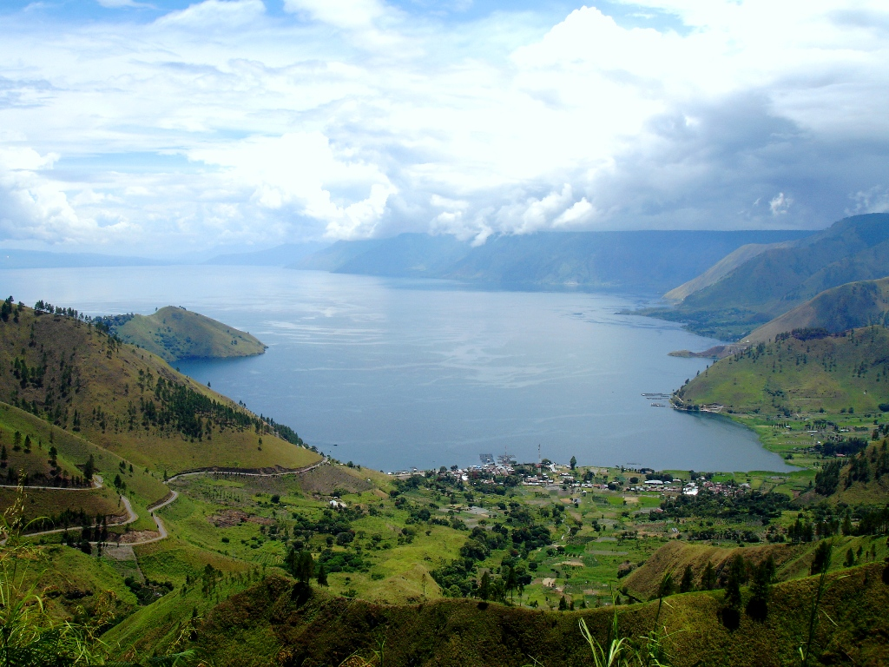
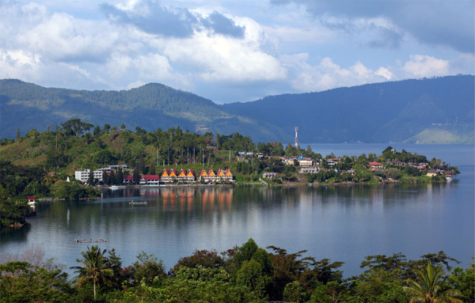
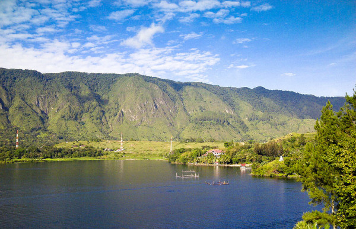
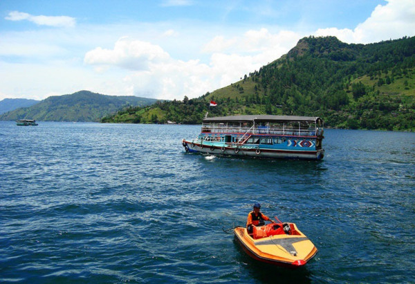
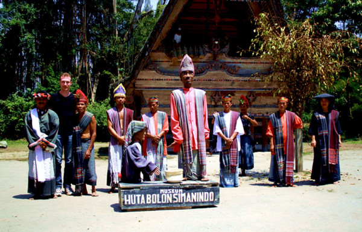
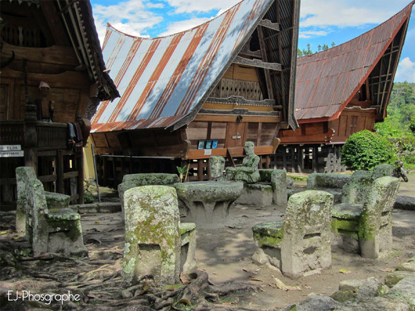

Danau Toba yang terletak di Sumatera Utara ini merupakan salah satu danau vulkanik terindah yang dimiliki Indonesia.
Dengan luas yang mencapai 1.145 kilometer persegi, Danau Toba tampak seperti sebuah lautan yang berada di ketinggian 900 meter di atas permukaan laut.

Selain disebut sebagai danau terluas di Asia Tenggara, danau yang memiliki kedalaman 450 meter ini juga menjadi danau terdalam di dunia.
Panjang Danau Toba mencapai hingga 100 km dengan lebar sebesar 30 km.

Secara geografis, Danau Toba berada di pegunungan Bukit Barisan Provinsi Sumatera Utara dengan topografi wilayah yang didominasi oleh perbukitan dan pegunungan.
Wilayah yang menjadi daerah tangkapan air pada kawasan wisata Danau Toba terdiri dari hutan alam, hutan rapat, hutan tanaman, hingga kebun campuran.


Di tengah Danau Toba, terdapat sebuah pulau yang bernama Pulau Samosir.
Pulau Samosir yang memiliki luas hampir sama dengan luas negara Singapura ini bukanlah pulau kosong, pulau ini menjadi tempat tinggal suku Batak Samosir.
Ada berbagai macam peninggalan kebudayaan masa lampau masyarakat Batak di Pulau Samosir.
Anda dapat pergi untuk melihat makam Raja Sidabutar yang telah berusia 500 tahun serta menyaksikan patung Sigale-Gale yang dapat menari.
Salah satu wisata budaya yang menarik di Kampung Tua Huta Bolon adalah pertunjukan tarian Batak tradisional yang bernama Tari Sigale-Gale.

Jika ingin melihat pengadilan tradisional suku Batak, pergilah ke Ambarita untuk menyaksikan Batu Parsidangan yang berusia ratusan tahun serta tempat eksekusi mati tahanan hukum di sana.

Beberapa tempat menarik lainnya di Pulau Samosir juga dapat Anda kunjungi, seperti Danau Sidihoni dan Danau Aek Natonang.
Danau Aek Natonang terletak di Desa Tanjungan, memiliki air yang begitu jernih di tengah rerumputan hijau yang tumbuh di sekelilingnya.
Dari lokasi ini, Anda dapat menyaksikan panorama alam yang indah dengan bentang perbukitan yang ditumbuhi pepohonan pinus.
Jika Anda ingin mencari sejumlah oleh-oleh khas Batak, pergilah ke Desa Jangga untuk membeli kain Ulos yang ditenun begitu indahnya dengan motif yang halus.
Desa ini adalah salah satu tempat komunitas Ulos tenun yang terkenal di Sumatera Utara dan Anda juga dapat melihat proses pembuatannya di sana.
Alamat Danau Toba: Parapat, Sumatera Utara
Koordinat GPS: 2.6680153,98.9376948